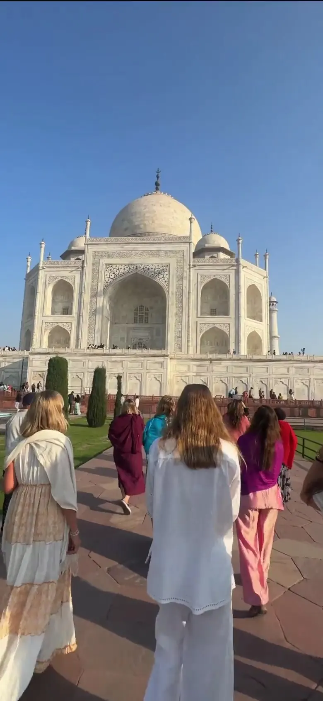
Diario de viaje · India 2027
Esto es un cuaderno de viaje.
Todavía le faltan tus páginas.
India, del 15 al 27 de febrero de 2027. Trece días que Agustina y Mauro ya recorrieron en 2025 y en 2026, y ahora repiten con un grupo nuevo de hasta doce personas.
—Para la próxima partida
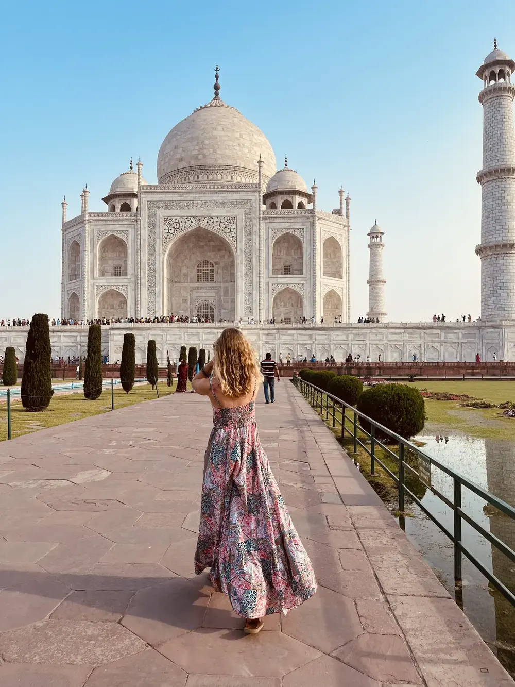
Antes de India
“En nuestro primer viaje a India sentimos algo profundo, un llamado imposible de ignorar. Cada encuentro, cada mirada y cada aprendizaje nos transformó. India nos abrió el corazón. Así nació la idea de compartir este camino. No un simple viaje, sino una experiencia que toca el alma.”
— Agustina y Mauro, fundadores de Viaje al Alma
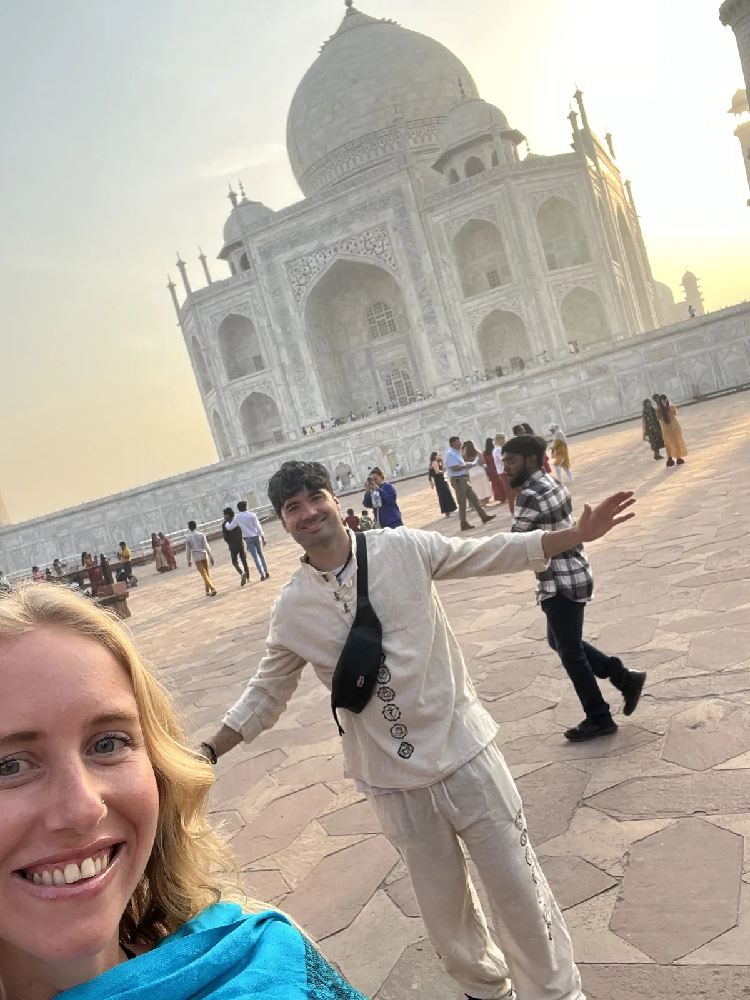
Quiénes te acompañan
Agustina y Mauro
Agustina es profesora de yoga y psicóloga. En Rishikesh, algunas de las clases las da ella; otras, un profesor local. Mauro es cofundador de Viaje al Alma. Juntos acompañan al grupo durante todo el recorrido, y desde Delhi hasta Rishikesh los suman guías locales de habla hispana en cada etapa.
Un mes antes del viaje arrancamos con encuentros virtuales grupales, para prepararnos juntos a nivel físico, emocional y energético.
Ya lo vivimos
Febrero de 2026. Doce personas hicieron este mismo camino.
Este es el segundo viaje grupal de Viaje al Alma a India. Estas fotos son del primero.
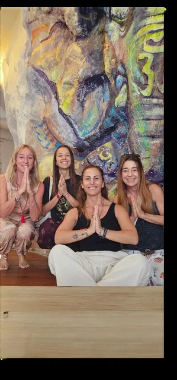
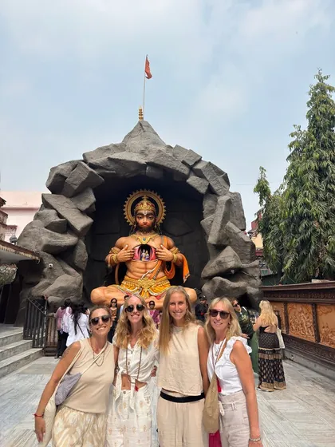
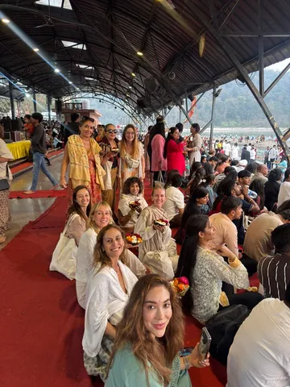
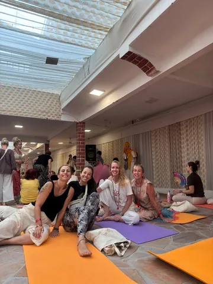
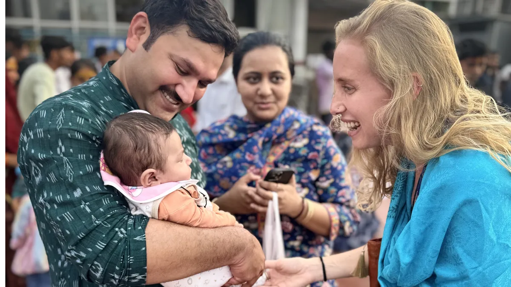
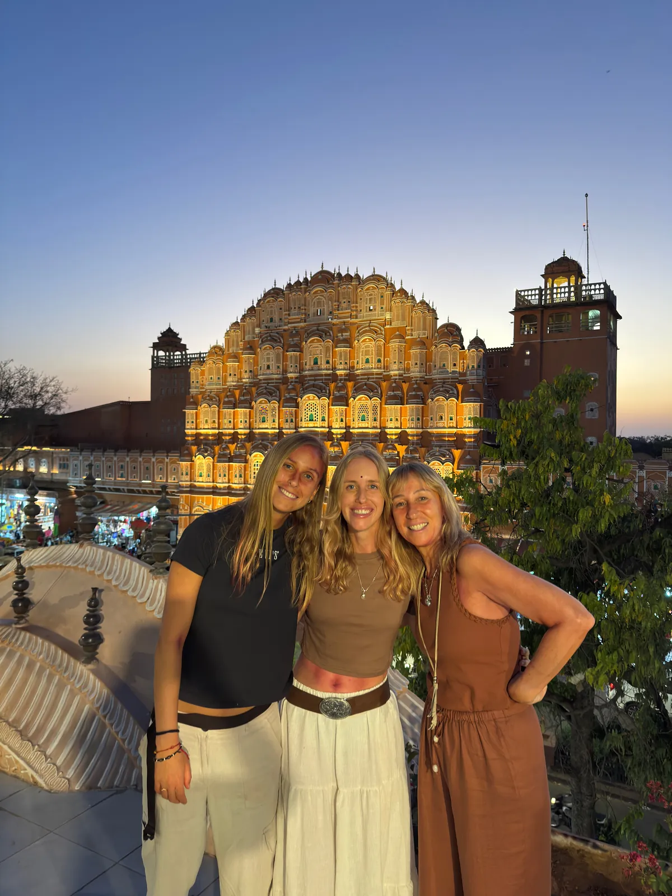
Por qué no es un tour
India no es un destino más
Recorremos el norte de India —Delhi, Agra, Jaipur y Rishikesh— combinando historia, espiritualidad y tiempo libre real. No hay un cronograma cerrado de la mañana a la noche: hay guía y estructura, y también margen para que cada día se acomode a como estés vos.
- Grupo reducido, de hasta 12 personas, acompañado todo el recorrido.
- Guías locales de habla hispana en cada etapa.
- Clases de yoga y meditación — sin experiencia previa necesaria.
- Ceremonias tradicionales y experiencias culturales auténticas.
- Transporte privado durante todo el recorrido.
- Equilibrio entre cultura, historia, espiritualidad y tiempo libre.
El itinerario
Trece días, cinco capítulos
-
Día 1 – 2 · 15 y 16 de febrero
Delhi La puerta de entrada
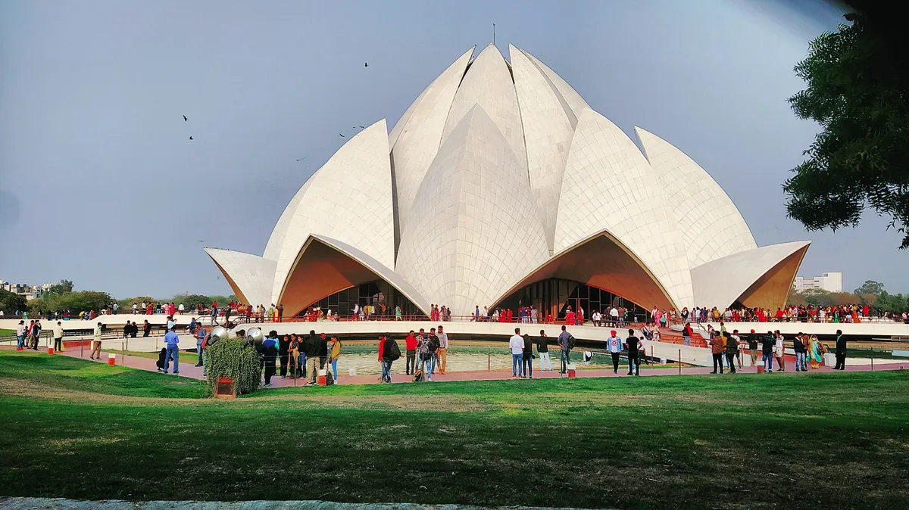
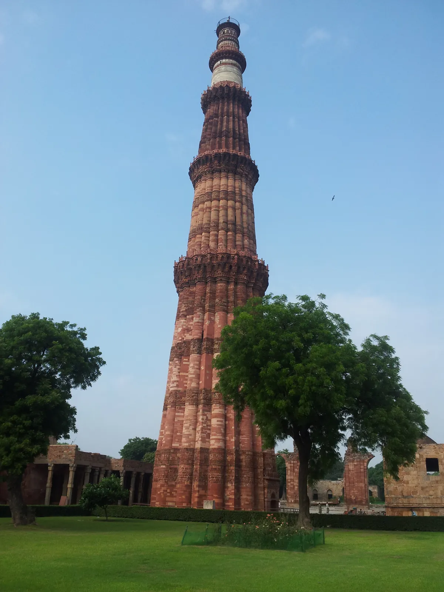
Llegada a Nueva Delhi y traslado a Green Park. El primer día queda libre para descansar y adaptarse al ritmo de India, con ayuda para cambiar dinero y conseguir SIM o eSIM. Al día siguiente, con guía local de habla hispana, recorremos el Qutub Minar, el Lotus Temple, India Gate, el Gurdwara Bangla Sahib y el mercado de Dilli Haat: siglos de historia, espiritualidad y modernidad conviviendo en una misma calle.
-
Día 3 – 4 · 17 y 18 de febrero
Mathura y Agra La tierra de Krishna, el amanecer del Taj Mahal
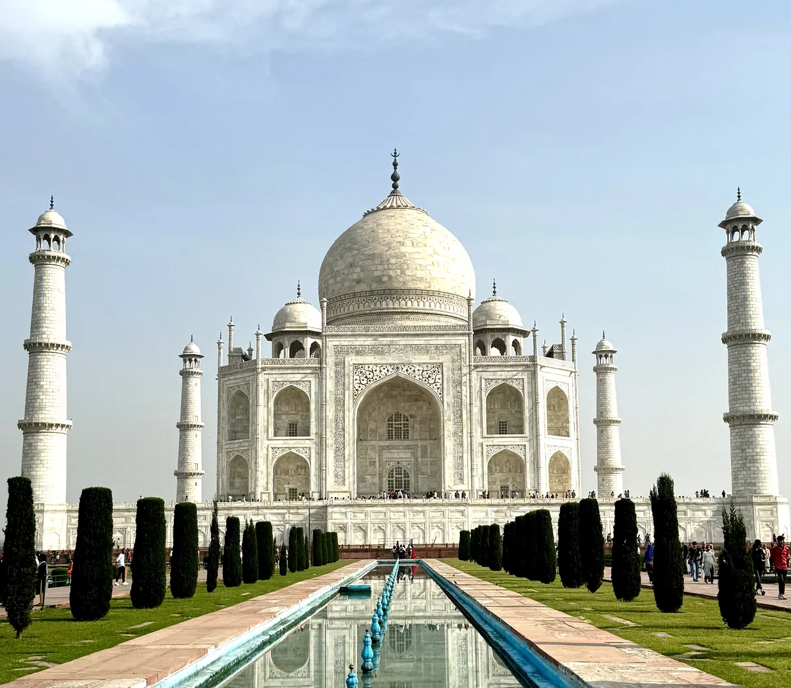
Clase de yoga antes del desayuno y viaje hacia Agra, con una parada en Mathura para visitar el Templo Shri Krishna Janmasthan, uno de los sitios más sagrados del hinduismo. Al día siguiente, muy temprano, el Taj Mahal al amanecer. Después, el Fuerte de Agra y viaje a Jaipur, la Ciudad Rosa.
-
Día 5 – 6 · 19 y 20 de febrero
Jaipur y Akshardham Los colores del Rajastán
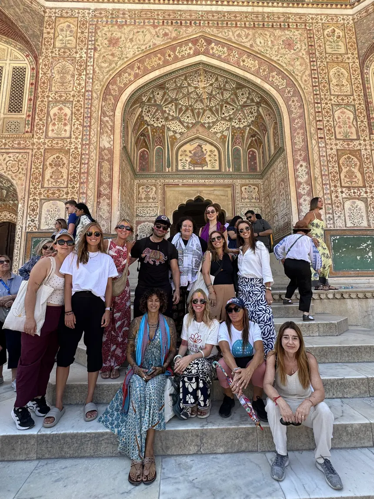
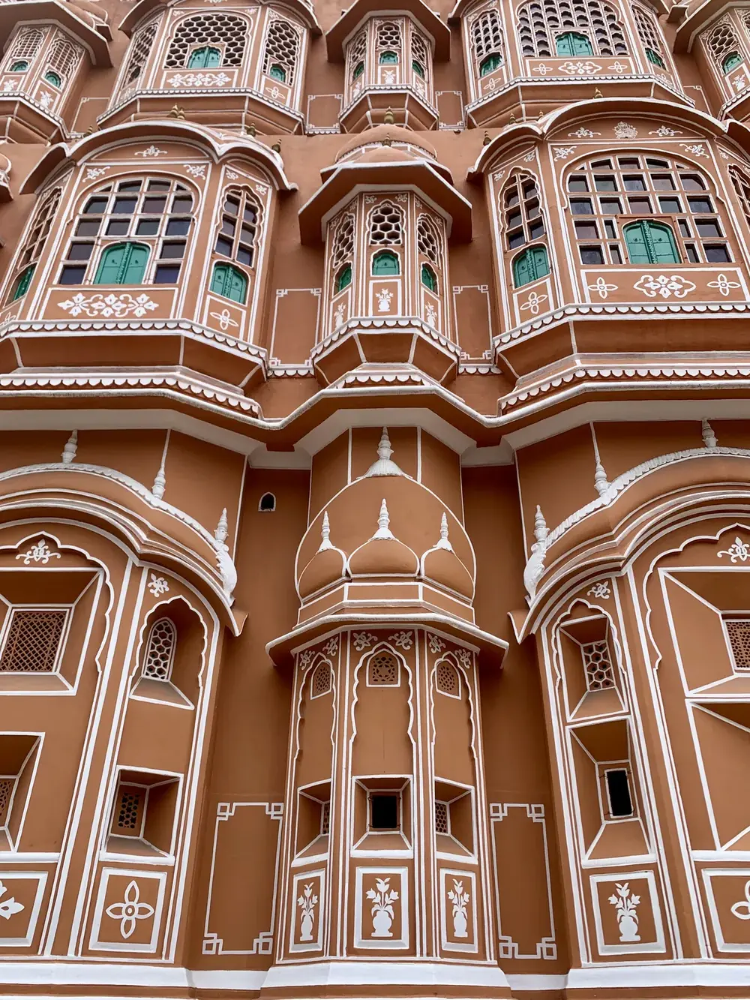
Día completo en Jaipur con guía local: el Amber Fort, el Hawa Mahal —el Palacio de los Vientos— y el Bapu Bazaar, entre palacios, fortalezas y mercados tradicionales. Al regresar a Delhi, visitamos Akshardham, uno de los complejos espirituales más impresionantes de India por su arquitectura monumental.
-
Día 7 – 12 · 21 al 26 de febrero
Rishikesh La capital mundial del yoga
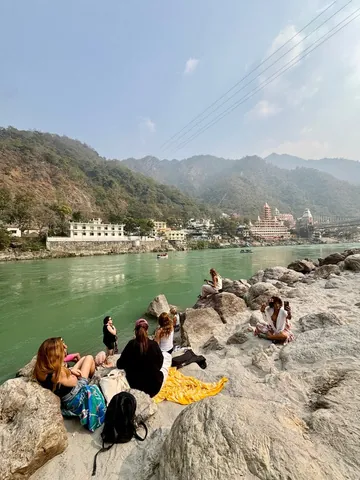
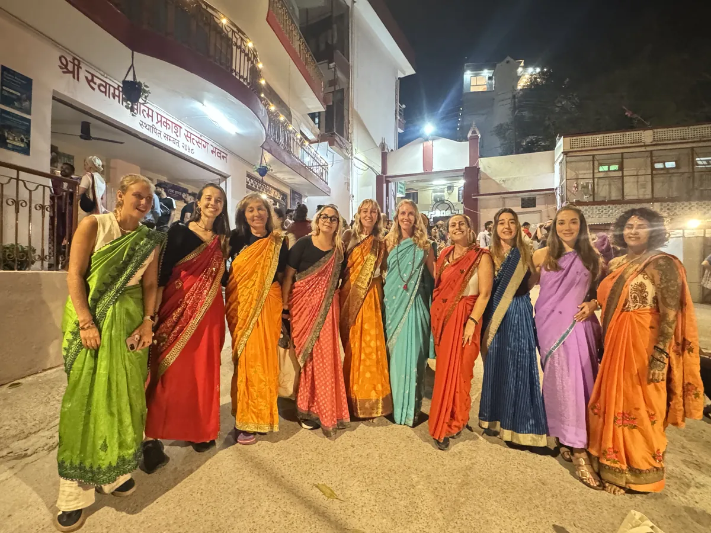
Seis noches a orillas del río Ganges, rodeados por las primeras montañas del Himalaya. Meditación al amanecer frente al Ganges, con la posibilidad de un baño ritual; tardes libres en Tapovan; un kirtan al caer la noche. Todos los días, una práctica de yoga guiada —algunas dictadas por Agustina, otras por un profesor local.
Visitamos templos y espacios espirituales, cruzamos los puentes colgantes de Lakshman Jhula y conocemos el Parmarth Niketan Ashram. Participamos de la Ganga Aarti, y cerramos con una cena de despedida antes de volver a Delhi.
-
Día 13 · 27 de febrero
Cierre o extensión Regreso, o inicio de Maldivas
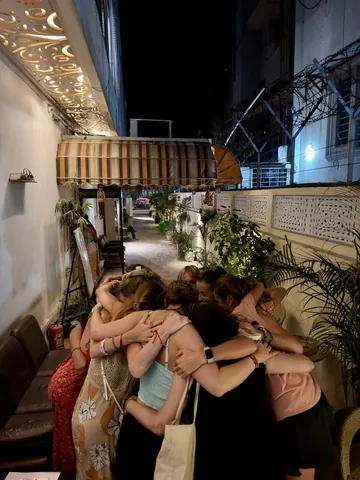
Traslado al aeropuerto para el vuelo internacional de regreso, o para comenzar la extensión opcional a Maldivas.
India te movió.
Cinco días para que eso se acomode.
Extensión opcional
Maldivas, cinco noches en Dhigurah
Después de la intensidad cultural y espiritual de India, cinco noches para integrar lo vivido frente al océano Índico. Nos alojamos en Dhigurah, una isla local de playas de arena blanca y aguas cristalinas.
Es una continuación del viaje a India, no una escapada aislada: se llega volando desde Delhi hasta Malé el mismo día 13, y se comparte con el grupo que ya recorrió India.
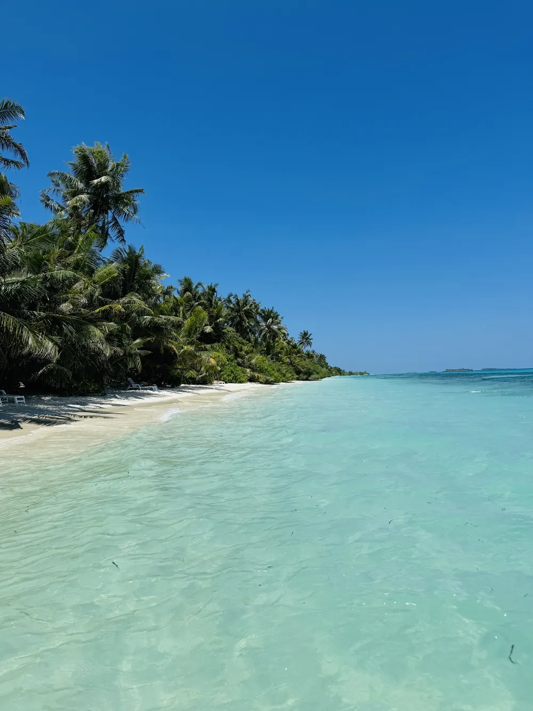
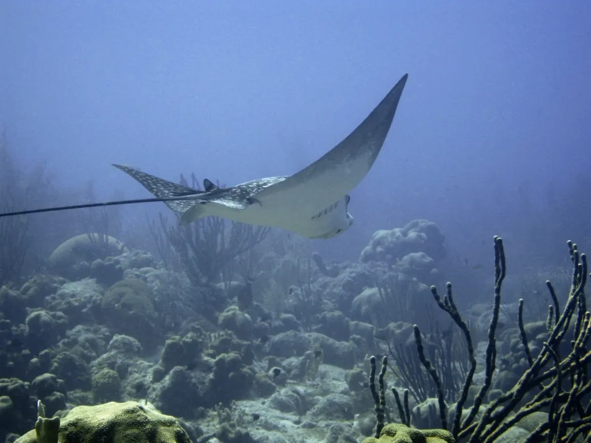
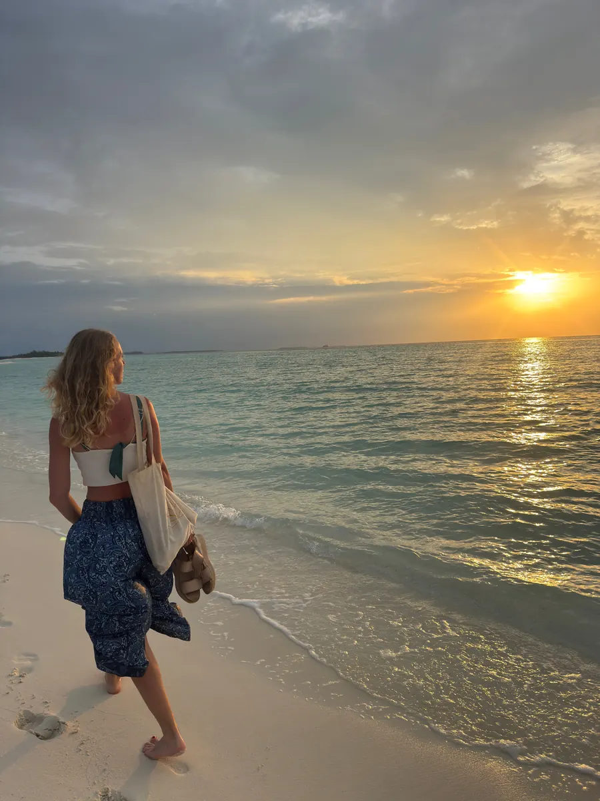
27 de febrero
Llegada a Maldivas
Vuelo desde Delhi hacia Malé y traslado en lancha rápida hasta Dhigurah, a pocos pasos del mar.
28 de febrero al 3 de marzo
Días libres en la isla
Tiempo para explorar Dhigurah, alquilar una bicicleta, caminar sus playas y aguas turquesas. Se recomienda la excursión —opcional, a cargo de cada viajero— para nadar junto a tiburones ballena y mantarrayas.
4 de marzo
Regreso a casa
Traslado al aeropuerto internacional para emprender el regreso.
Lo concreto
Qué incluye cada tramo
India
Incluye
- Tour privado con guía en español
- Alojamiento con desayuno incluido
- Clases de yoga y meditación
- Acompañamiento integral antes y durante el viaje
No incluye
- Pasajes aéreos internacionales (te ayudamos con la gestión)
- Comidas no mencionadas en el itinerario
- Seguro médico y de viaje (obligatorio)
- Gastos personales
- Visado (gratuito para argentinos, te ayudamos con la gestión)
Extensión Maldivas
Incluye
- Alojamiento a pasos de una playa paradisíaca
- Traslados en lancha rápida entre Malé y Dhigurah, ida y vuelta
- Alojamiento con desayuno incluido
No incluye
- Pasajes aéreos internacionales
- Comidas no mencionadas
- Seguro médico y de viaje (obligatorio)
- Gastos personales
- Excursiones de snorkel o buceo (se gestionan en el hotel)
Voces del grupo
Esto no lo escribimos nosotros
Mensajes reales del grupo que viajó en febrero de 2026, tal como los escribieron — sin editar, con nombres de pila para cuidar su privacidad.
“Tengo el alma plena de felicidad, de amor, de expansión… fue todo mágico, volvería hoy mismo.”
— Paula, nota de voz real
“Una persona de oro que trasmite paz, que tiene cara de ángel… dos seres de luz.”
— Hija de una viajera
“Viajar con ustedes fue sentirse parte de una nueva familia, todo el tiempo atentos cariñosamente a nuestras necesidades.”
— Lorena
“Fue muy loco ver una forma de vida tan distinta. Me enseñó a valorar muchas cosas que siempre tuve y no le daba tanta importancia.”
— Victoria
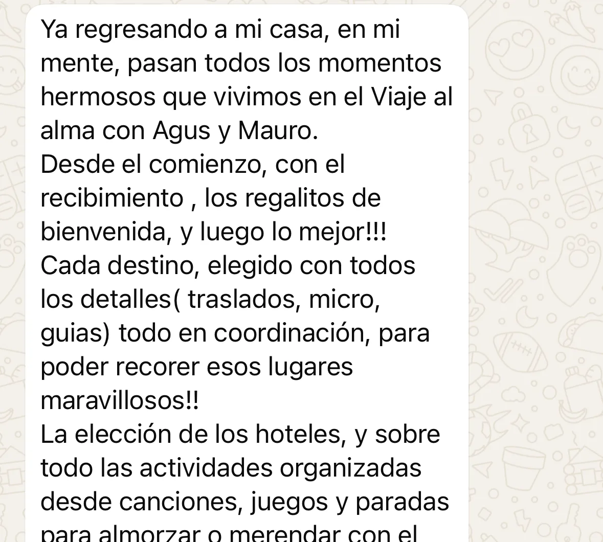
“Aún con las emociones a flor de piel, procesando todo lo lindo del viaje — y sobre todo, del grupo que me aportó tanto.”
— Patricia
“A través de todo, absolutamente todo, es que puedo recordar lo que soy, lo que importa — regresando en cada paso a mi esencia.”
— Cinthya
Antes de que preguntes
Lo que solemos responder
No. No se necesita experiencia previa y tampoco es obligatorio participar de las clases si en algún momento preferís no hacerlo.
Las clases de yoga están pensadas para cualquier edad. El grupo del primer viaje, en febrero de 2026, incluyó viajeras y viajeros de distintas generaciones.
Sí. Si viajás sin acompañante, te asignamos un compañero o compañera de habitación. También podés optar por habitación individual con un costo adicional — consultanos el valor por WhatsApp.
Es un grupo reducido, de hasta 12 personas, acompañado durante todo el recorrido.
Tour privado con guía en español, alojamiento con desayuno, clases de yoga y meditación, transporte privado durante el recorrido y acompañamiento integral antes y durante el viaje.
Los pasajes aéreos internacionales, las comidas no mencionadas en el itinerario, el seguro médico y de viaje (obligatorio) y los gastos personales.
No. Cada persona gestiona su propio vuelo internacional; nosotros te asesoramos si lo necesitás.
Sí, pero es gratuita para pasaportes argentinos. Te acompañamos en toda la gestión.
Es opcional y continúa el mismo viaje: se vuela desde Delhi hasta Malé el día 13 y se comparten las 5 noches en Dhigurah con el grupo que hizo India. No está pensada como una escapada aislada de solo playa.
Un mes antes empezamos con encuentros virtuales grupales, para prepararnos juntos a nivel físico, emocional y energético.
Escribinos por WhatsApp y coordinamos los próximos pasos con vos.
El grupo es chico. El lugar, no es infinito.
Reservá tu lugar para India 2027
Somos hasta 12 personas por viaje. Esta conversación no te compromete a nada — es el primer paso para saber si este es tu momento.
Quiero reservar mi lugar